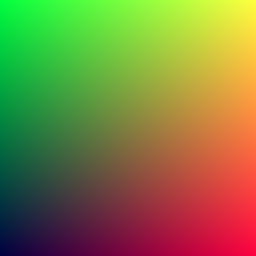

Output an Image
The PPM Image Format
To build a render, we need to see an image. We choose the PPM image format.
Its inner format is this from Wikipeida:
 First we need some code to output such an image.
First we need some code to output such an image.
fn main() { const IMAGE_WIDTH: i32 = 256; const IMAGE_HEIGHT: i32 = 256; println!("P3\n{IMAGE_WIDTH} {IMAGE_HEIGHT}\n255"); for j in (0..IMAGE_HEIGHT).rev() { for i in 0..IMAGE_WIDTH { let r = (i as f64) / (IMAGE_WIDTH as f64 - 1 as f64); let g = (j as f64) / (IMAGE_HEIGHT as f64 - 1 as f64); let b = 0.25; let ir: i32 = (255.999 * r) as i32; let ig: i32 = (255.999 * g) as i32; let ib: i32 = (255.999 * b) as i32; println!("{ir} {ig} {ib}"); } } }
Creating an Image File
That's the content of our image file, but we need to redirect it to a file like this:
./target/debug/ray_tracing > image.ppm
This works on Mac and Linux, and things should be similar on Windows, adding a .exe postfix should work.
Open such image.ppm file using ToyViewer on my Mac or any other tool you prefer, we should get such image:

And its content should be something like this when opened by a text editor.
P3
256 256
255
0 255 63
1 255 63
2 255 63
3 255 63
4 255 63
5 255 63
6 255 63
7 255 63
8 255 63
9 255 63
...
Adding a Progress Indicator
A rending process may cost lots of time. So we need an indicator to track the process and is easier to identify an infinite loop or some other errors.
We just use the std::error channel as our info output:
fn main() { const IMAGE_WIDTH: i32 = 256; const IMAGE_HEIGHT: i32 = 256; println!("P3\n{IMAGE_WIDTH} {IMAGE_HEIGHT}\n255"); for j in (0..IMAGE_HEIGHT).rev() { eprintln!("\rScanlines remaining: {j}"); for i in 0..IMAGE_WIDTH { let r = (i as f64) / (IMAGE_WIDTH as f64 - 1 as f64); let g = (j as f64) / (IMAGE_HEIGHT as f64 - 1 as f64); let b = 0.25; let ir: i32 = (255.999 * r) as i32; let ig: i32 = (255.999 * g) as i32; let ib: i32 = (255.999 * b) as i32; println!("{ir} {ig} {ib}"); } } eprintln!("\nDone"); }